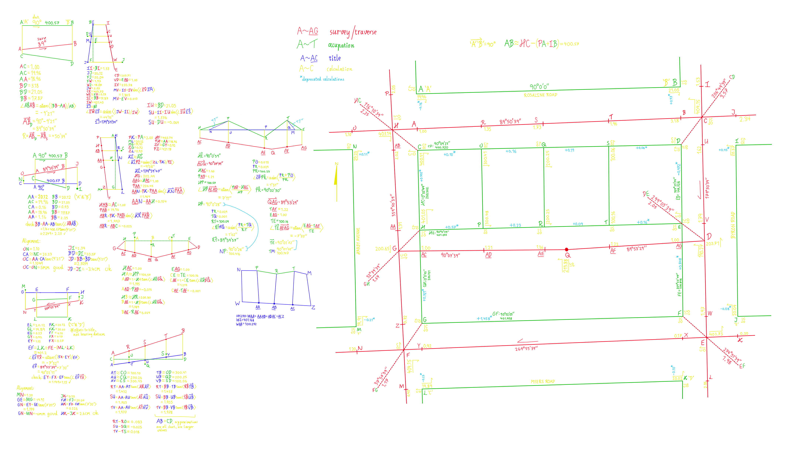
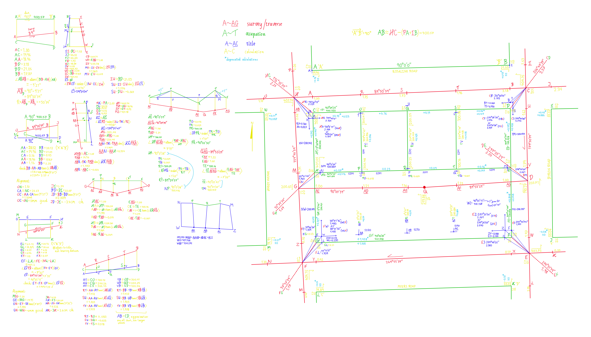
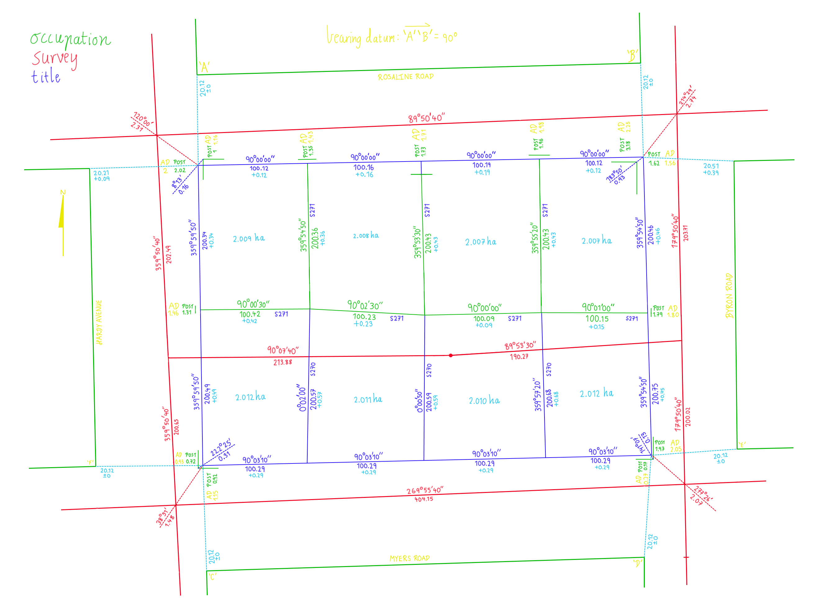

Boundary Re-establishment 1 ~ Worksheet
  
This was a big project from the second semester of my third year. While in retrospect, the basic principles
of Crown Boundary Re-establishment aren't awfully complicated, it was certainly a lot to keep track of everything
(and keep on track) in this project due to the several steps and calculations. This is a good example of how I tend to
go quite far to ensure I can keep things organized. Since this was the first-of-its-kind project for me, I ended up
developing the point marking system on the go alongside using color coding to ensure I always knew what information
I had available.
As the above title implies, this was the first - not the only - project of its kind. With this as practice for knowing what I needed
to track, I was able to make a much better organization system on the following Boundary Re-establishment project.